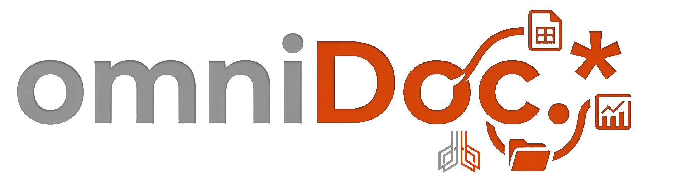
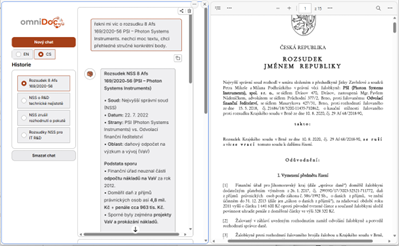

Proměňte své dokumenty v inteligentní dotazovací vrstvu
Transform your documents into an intelligent query layer
Potřebujete při přípravě dokumentů nebo stanovisek pracovat s konkrétními zdroji a dokumenty v Copilotu? Nebo v interních a důvěrných databázích?
Do you need to work with specific sources and documents in Copilot while preparing documents or opinions? Or with internal and confidential databases?
Nástroj omniDoc. umí účinně vyhledávat a interpretovat informace z Wordovských, textových nebo PDF dokumentů. Může jít o zápisy z jednání, dokumentace k produktům, účetní deníky, databáze nebo záznamy o kontrolách.
The omniDoc. tool can efficiently search and interpret information from Word, text, or PDF documents. These may include meeting minutes, product documentation, accounting journals, databases, or inspection records.
Při vyhledání zvládne oproti běžnému fulltextovému hledání zachytit složitější sémantickou shodu, takže například pro heslo VaV vyhledá i R&D a také termín „výzkum a vývoj".
Compared to standard full-text search, it can capture more complex semantic matches, so for example the keyword VaV will also find R&D as well as the term "research and development."
- omniDoc. umí strukturovat zdroje dat do kolekcí a při práci pak můžete volit, kterou kolekci využijete a kterou naopak ne.
omniDoc. can structure data sources into collections, and when working, you can choose which collection to use and which one not to use. - Dohledané informace omniDoc. interpretuje, shrnuje, dokládá odkazy na příslušné zdrojové dokumenty.
Retrieved information is interpreted, summarized, and referenced to the relevant source documents by omniDoc.
omniDoc. interprets, summarizes, and provides references to the relevant source documents. - Při zpracování textu vám omniDoc. ušetří čas a pomůže vám tvořit potřebné odstavce do vašeho e-mailu, stanoviska nebo zprávy.
When processing text, omniDoc. saves you time and helps you create the necessary paragraphs for your email, opinion, or report.
omniDoc. saves you time and helps you create the necessary paragraphs for your email, opinion, or report.

omniDoc. zpracuje Vaše data zcela důvěrně, používá lokální modely. Vyhledané zdroje se automaticky zobrazují v uživatelském prostředí a je možné je procházet pro případnou expertní kontrolu.
omniDoc. processes your data in complete confidence and uses local models. Retrieved sources are automatically displayed in the user interface and can be reviewed for expert verification if needed.
omniDoc. pracuje v češtině i v angličtině, rozeznává v dokumentech obrázky a umí v nich hledat. Nezastaví ho ani stovky tisíc zdrojových dokumentů.
omniDoc. works in both Czech and English, recognizes images in documents, and can search within them. Even hundreds of thousands of source documents will not stop it.